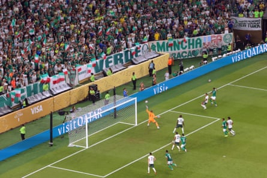
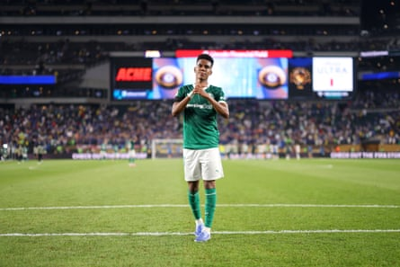

Enzo Maresca called Estêvão Willian a huge talent after the Brazilian teenager marked his final game for Palmeiras by scoring a brilliant goal in his side’s Club World Cup quarter-final defeat to Chelsea .
The 18-year-old winger, who will be playing at Stamford Bridge next season , found himself in the unusual position of trying to knock his next employers out at Lincoln Financial Field on Friday night. Chelsea made it through to a semi-final with Fluminense after a late own-goal from Weverton but there was huge excitement around Estêvão after his stunning equaliser at the start of the second half.
“You can see he is a huge talent,” Maresca said. “You can see he is a fantastic player. The only thing now is when you come from South America or another part of the world to Europe you need to adapt. We are going to help him to adapt and first of all to enjoy football. We don’t have any doubt, as he is so good, that he is going to be an important player for Chelsea .”
Chelsea took an early lead through Cole Palmer, who embraced Estêvão and swapped shirts with his future attacking partner at full-time. “I told Estêvão we are excited for you to join but he didn’t understand a single word I said,” Palmer said.
Estêvão, who stayed for Palmeiras for one more season after Chelsea agreed a £52m deal with the Brazilian club last year, was named superior player of the match. He will go into Chelsea’s first-team squad having already shown them his quality.
“I’m very happy I could score a goal to help my club,” the teenager said. “Unfortunately this wasn’t the result we wanted but we gave our best on the pitch. Now I am moving on and I thank Palmeiras for everything. I will cheer Palmeiras on and I am so happy to have been part of this club.”
Abel Ferreira, who has played a pivotal role in Estêvão’s development, urged Chelsea to continue to support the youngster. “You bought an amazing player but more than this you bought an amazing person,” the Palmeiras manager said. “You need to take care of him. You need to embrace him and in the beginning for sure he will make mistakes. He is an amazing player with a lot of skill. He is a player who can win a game alone.
Estêvão scores for Palmeiras against Chelsea.Photograph: Charly Triballeau/AFP/Getty Images
“With new players and a new coach he will grow as a player and a person. For sure he will need your support. It’s the first time he will leave his country. In England the sun appears two or three times a year and the night comes early but with help Chelsea have conditions to support him.”
Estêvão dealt with some tough tackling from Marc Cucurella, which bodes well for his ability to cope with Premier League defenders. “He has a lot of mobility,” Ferreira said. “He looks slim, but he is strong. He is fast. The way he shot on goal was with his right foot. He is an amazing player.”
Estêvão applauds the Palmeiras fans after the game.Photograph: Carl Recine/Fifa/Getty Images
Levi Colwill and Liam Delap will be suspended against Fluminense after picking up yellow cards. Moises Caicedo will return from a ban but Maresca has injury concerns over Romeo Lavia, and Reece James had to pull out of the starting XI after feeling tightness during the warm-up.
Maresca offered no response to Chelsea being fined £27m by Uefa for breaking financial fair play rules. There are doubts over whether Chelsea will be able to add new players to their European squad. They are under pressure to make sales this summer. Christopher Nkunku and Noni Madueke started against Palmeiras but both forwards are candidates to leave as the club looks to raise revenue.